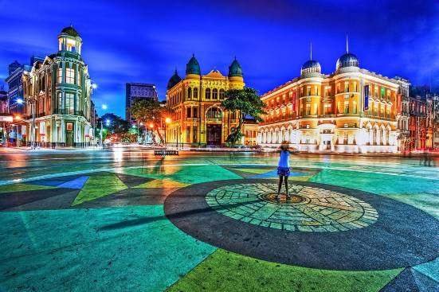

Introdução
O Marco Zero é um dos pontos turísticos mais famosos de Recife, localizado no bairro do Recife Antigo.
Imagens

Importância Histórica
O Marco Zero do Recife é um dos pontos turísticos mais emblemáticos da cidade e do estado de Pernambuco. Localizado no bairro do Recife Antigo, este local histórico é considerado o ponto inicial a partir do qual todas as distâncias rodoviárias do estado são medidas. O Marco Zero é mais do que apenas um ponto geográfico; é um símbolo da rica história e cultura de Recife e um local de encontro para diversas atividades culturais, sociais e turísticas. Importância Histórica O Marco Zero foi estabelecido no século 19 e desde então tem sido um ponto de referência importante. Ele está situado próximo ao Porto do Recife, que foi um dos portos mais movimentados durante os períodos colonial e imperial do Brasil. O local também tem importância na história da expansão urbana de Recife, servindo como um ponto de partida para o desenvolvimento da cidade. Atrações e Atividades O Marco Zero é cercado por uma série de atrações turísticas e culturais. O local é frequentemente utilizado para eventos públicos, como shows, festivais e celebrações. Durante o Carnaval, torna-se um dos pontos mais animados da cidade. Além disso, a Praça do Marco Zero, onde o marco está situado, é rodeada por edifícios históricos, museus e galerias de arte, tornando-o um local ideal para quem deseja conhecer mais sobre a cultura e a história da região. O Obelisco No centro da praça, você encontrará um obelisco que marca o ponto zero propriamente dito. Este monumento é frequentemente decorado ou iluminado de maneiras criativas, especialmente durante festivais e outras celebrações. Como Chegar O Marco Zero é facilmente acessível por transporte público, incluindo ônibus e táxis. Para os mais aventureiros, uma caminhada pelo bairro do Recife Antigo até o Marco Zero pode ser uma forma interessante de explorar a área. Em resumo, o Marco Zero é mais do que apenas um ponto geográfico ou histórico; é um espaço vivo que reflete a vibrante cultura e história de Recife. Se você estiver visitando a cidade, este é definitivamente um local que você não vai querer perder..